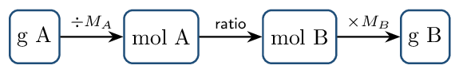

The front half (§3.1–3.7) is CED Unit 1 territory — moles, molar mass, percent composition, empirical formulas. The back half (§3.8–3.11) is Unit 4 content you won't formally meet until much later: balancing, mass-to-mass calculations, limiting reactant, percent yield. Working the whole chapter now front-loads the single most reusable skill in chemistry. Every unit from 4 onward assumes you can do stoichiometry without thinking.
Counting by Weighing Zumdahl §3.1–3.5
- Explain why chemists count particles by weighing them.
- Convert fluently among mass, moles, and number of particles.
Read: Zumdahl §3.1–3.5 • PDF pp. 110–123
- Neutrons in \(\ce{^{65}Cu}\): 36
- Formula for calcium phosphate: \(\ce{Ca3(PO4)2}\)
- Sig figs in 0.03060 g: 4
INSTRUCTION A • The mole and molar mass 25 min
Counting by weighing ZUM §3.1–3.3
SP 5You cannot count atoms individually, so you count them the way a bank counts pennies — by weighing. That requires knowing the average mass of one particle, which is what the periodic table gives you.
The mole is a counting unit:Atomic mass is a weighted average
Because elements are mixtures of isotopes, the tabulated mass isMolar mass
The molar mass \(M\) in g/mol is numerically the atomic (or formula) mass. Build it by summing:
\(\ce{Ca(NO3)2}\): \(40.08 + 2(14.01) + 6(16.00) =\) 164.10 g/molCount the atoms inside parentheses times the subscript outside. \(\ce{Ca(NO3)2}\) has 2 N and 6 O, not 1 N and 3 O. This single slip wrecks more stoichiometry problems than any other.
GUIDED PRACTICE • Conversions in both directions 15 min
- Moles in 36.0 g of \(\ce{H2O}\): 2.00 mol
- Mass of 0.500 mol of \(\ce{NaCl}\): 29.2 g
- Molecules in 2.00 mol of \(\ce{CO2}\): \(1.20\times10^{24}\)
- Moles of O atoms in 1.00 mol of \(\ce{Ca(NO3)2}\): 6.00 mol
INSTRUCTION B • Solving problems systematically 20 min
Where are we going? How do we get there? ZUM §3.5
SP 5Zumdahl's framing, worth adopting: before computing, write where are we going (the target quantity and unit) and what do we know. Then build the path.
How many hydrogen atoms are in 25.0 g of \(\ce{C3H8}\)? \begin{align*} M(\ce{C3H8}) &= 3(12.01) + 8(1.008) = 44.09\,\mathrm{g/mol}\\ n &= \frac{25.0}{44.09} = 0.567\,\mathrm{mol}\ \ce{C3H8}\\ n_{\ce{H}} &= 8 \times 0.567 = 4.54\,\mathrm{mol}\ \ce{H}\\ N_{\ce{H}} &= 4.54 \times 6.022\times10^{23} = 2.73\times10^{24}\ \text{atoms} \end{align*} Every step passes through moles. There is no shortcut from grams to atoms.
APPLICATION • Reverse problems 20 min
- A sample of \(\ce{N2}\) contains \(3.01\times10^{23}\) molecules. Find its
mass.
\(n = 3.01\times10^{23}/6.022\times10^{23} = 0.500\,\mathrm{mol}\); \(m = 0.500 \times 28.02 = 14.0\,\mathrm{g}\)
- A 5.00 g sample of an unknown metal contains
\(4.58\times10^{22}\) atoms. Identify the metal.
\(n = 4.58\times10^{22}/6.022\times10^{23} = 0.0761\,\mathrm{mol}\); \(M = 5.00/0.0761 = 65.7\,\mathrm{g/mol}\) \(\to\) zinc
Which contains more atoms: 10.0 g of He or 10.0 g of Ne? Justify without a calculator.
Formulas from Composition Data Zumdahl §3.6–3.7
- Compute percent composition from a formula.
- Determine empirical and molecular formulas from percent composition or combustion data.
Read: Zumdahl §3.6–3.7 • PDF pp. 123–132
- Molar mass of \(\ce{(NH4)2SO4}\): 132.15 g/mol
- Moles in 4.4 g \(\ce{CO2}\): 0.10 mol
- Atoms in 0.25 mol Fe: \(1.5\times10^{23}\)
- Mass of 2.0 mol \(\ce{O2}\): 64 g
INSTRUCTION A • Percent composition 25 min
From formula to percentages ZUM §3.6
SP 5A useful check: the percentages must total 100%.
GUIDED PRACTICE • Percent composition drill 15 min
- \(\%\,\ce{N}\) in \(\ce{NH3}\): 82.2%
- \(\%\,\ce{O}\) in \(\ce{H2SO4}\): 65.25%
- Mass of Fe in 100.0 g of \(\ce{Fe2O3}\): 69.94 g
INSTRUCTION B • Empirical and molecular formulas 20 min
The four-step determination ZUM §3.7
SP 5- Assume 100 g — percents become grams.
- Convert each mass to moles.
- Divide all by the smallest.
- Not whole numbers? Multiply all by a small integer.
43.64% P, 56.36% O; molar mass 283.88 g/mol. \begin{align*} \ce{P}&: \frac{43.64}{30.97} = 1.409 & \ce{O}&: \frac{56.36}{16.00} = 3.523\\ \ce{P}&: \frac{1.409}{1.409} = 1 & \ce{O}&: \frac{3.523}{1.409} = 2.5 \end{align*} \(\times2 \to\) empirical \(\ce{P2O5}\) (\(M_{\text{emp}} = 141.94\)). \(\dfrac{283.88}{141.94} = 2\), so the molecular formula is \(\ce{P4O10}\).
Zumdahl states the rounding rule explicitly: values like 9.92 and 1.08 should be rounded; values like 2.25, 4.33, and 2.72 should not. Those are signals to multiply by 4, 3, and 4 respectively — never round a .25/.33/.5/.67/.75.
Molecular from empirical
APPLICATION • Combustion analysis 20 min
Burning a hydrocarbon in excess \(\ce{O2}\) converts all C to \(\ce{CO2}\) and all H to \(\ce{H2O}\). Working backward gives the formula.
A 0.1000 g sample of a compound containing only C, H, and O burns to give 0.1466 g \(\ce{CO2}\) and 0.0600 g \(\ce{H2O}\). Its molar mass is 60.05 g/mol.
- Mass of C (all of it came from the \(\ce{CO2}\)): 0.0400 g
- Mass of H (from the \(\ce{H2O}\)): 0.00671 g
- Mass of O — explain why it must be found by difference.
- Empirical and molecular formulas:
C: \(0.0400/12.01 = 3.33\times10^{-3}\); H: \(0.00671/1.008 = 6.66\times10^{-3}\); O: \(0.0533/16.00 = 3.33\times10^{-3}\). Ratio \(1{:}2{:}1 \to\) \(\ce{CH2O}\) (\(M_{\text{emp}} = 30.03\)); \(60.05/30.03 = 2 \to\) \(\ce{C2H4O2}\).
A compound is 40.0% C, 6.7% H, 53.3% O with molar mass 180 g/mol. Find both formulas.
Equations and Mass Relationships Zumdahl §3.8–3.10
- Balance chemical equations and state what the coefficients mean.
- Carry out mass-to-mass stoichiometric calculations.
Read: Zumdahl §3.8–3.10 • PDF pp. 132–142
- Empirical formula of \(\ce{C6H12O6}\): \(\ce{CH2O}\)
- \(\%\,\ce{H}\) in \(\ce{CH4}\): 25.1%
- Moles in 9.0 g \(\ce{Al}\): 0.33 mol
INSTRUCTION A • Balancing and what it means 25 min
Chemical equations ZUM §3.8–3.9
SP 1A balanced equation expresses conservation of atoms (hence mass). You may change coefficients but never subscripts — changing a subscript changes the substance.
Coefficients are mole ratios
\(\ce{2 H2 + O2 -> 2 H2O}\) reads: 2 mol \(\ce{H2}\) react with 1 mol \(\ce{O2}\) to give 2 mol \(\ce{H2O}\). It does not say 2 grams.Balance \(\ce{C3H8 + O2 -> CO2 + H2O}\).
Carbon first: 3 C on the left \(\to\) \(\ce{3 CO2}\). Hydrogen: 8 H \(\to\)
\(\ce{4 H2O}\). Now count oxygen on the right: \(3(2) + 4(1) = 10\) O \(\to\)
\(\ce{5 O2}\).
\[
\ce{C3H8 + 5 O2 -> 3 CO2 + 4 H2O}
\]
Strategy: save the element that appears in the most compounds (usually O)
for last.
- \(\ce{Fe + O2 -> Fe2O3}\): \(\ce{4 Fe + 3 O2 -> 2 Fe2O3}\)
- \(\ce{Al + HCl -> AlCl3 + H2}\): \(\ce{2 Al + 6 HCl -> 2 AlCl3 + 3 H2}\)
- \(\ce{C2H6 + O2 -> CO2 + H2O}\): \(\ce{2 C2H6 + 7 O2 -> 4 CO2 + 6 H2O}\)
GUIDED PRACTICE • Mole-ratio reasoning 15 min
For \(\ce{N2 + 3 H2 -> 2 NH3}\):- Moles of \(\ce{H2}\) needed for 2.0 mol \(\ce{N2}\): 6.0 mol
- Moles of \(\ce{NH3}\) from 0.50 mol \(\ce{N2}\): 1.0 mol
- Moles of \(\ce{N2}\) needed for 5.0 mol \(\ce{NH3}\): 2.5 mol
INSTRUCTION B • The mass-to-mass road 20 min
Stoichiometric calculations ZUM §3.10
SP 5
The middle arrow is the only step that uses the balanced equation. Everything else is molar mass.
What mass of \(\ce{O2}\) is needed to burn 22.0 g of \(\ce{C3H8}\)? \[ 22.0\ \text{g} \times \frac{1\ \text{mol}}{44.09\ \text{g}} \times \frac{5\ \text{mol } \ce{O2}}{1\ \text{mol } \ce{C3H8}} \times \frac{32.00\ \text{g}}{1\ \text{mol}} = 79.8\,\mathrm{g} \]
APPLICATION • Full stoichiometry 20 min
For \(\ce{2 Al + 3 Cl2 -> 2 AlCl3}\):- Mass of \(\ce{AlCl3}\) from 5.40 g Al (excess \(\ce{Cl2}\)):
\(5.40/26.98 = 0.200\,\mathrm{mol}\) Al \(\to 0.200\,\mathrm{mol}\) \(\ce{AlCl3}\) \(\times 133.33 = 26.7\,\mathrm{g}\)
- Mass of \(\ce{Cl2}\) consumed:
\(0.200 \times \tfrac32 = 0.300\,\mathrm{mol}\) \(\ce{Cl2}\) \(\times 70.90 = 21.3\,\mathrm{g}\)
- Check your two answers against conservation of mass.
Why can't you convert grams of A directly to grams of B using the coefficients?
Limiting Reactant and Percent Yield Zumdahl §3.11
- Identify the limiting reactant and compute theoretical yield.
- Use a BCA table to track a reaction to completion.
- Calculate percent yield.
Read: Zumdahl §3.11 • PDF pp. 142–153
- Balance: \(\ce{H2 + O2 -> H2O}\): \(\ce{2 H2 + O2 -> 2 H2O}\)
- Moles in 28.0 g \(\ce{N2}\): 1.00 mol
- Mole ratio \(\ce{O2}\):\(\ce{CO2}\) in \(\ce{C3H8 + 5 O2 -> 3 CO2 + 4 H2O}\): \(5{:}3\)
- Molar mass of \(\ce{NH3}\): 17.03 g/mol
INSTRUCTION A • The sandwich problem 25 min
Limiting reactant ZUM §3.11
SP 5Zumdahl's analogy: with 8 slices of bread, 9 slices of meat, and 5 slices of cheese, and a sandwich needing 2 bread \(+\) 3 meat \(+\) 1 cheese, you can make 3 sandwiches. The meat runs out first — even though you started with more of it than anything else.
The limiting reactant is not the one with the smallest amount. It is the one that runs out first given the ratio the reaction demands. You must compare against the coefficients.
Method: compare moles of product each reactant could make
Whichever reactant yields less product is limiting, and that smaller number is the theoretical yield.
25.0 g \(\ce{N2}\) and 5.00 g \(\ce{H2}\) react: \(\ce{N2 + 3 H2 -> 2 NH3}\). \begin{align*} n(\ce{N2}) &= 25.0/28.02 = 0.892\,\mathrm{mol} \to 2(0.892) = 1.78\,\mathrm{mol}\ \ce{NH3}\\ n(\ce{H2}) &= 5.00/2.016 = 2.48\,\mathrm{mol} \to \tfrac23(2.48) = 1.65\,\mathrm{mol}\ \ce{NH3} \end{align*} \(\ce{H2}\) gives less \(\to\) \(\ce{H2}\) is limiting; theoretical yield \(= 1.65 \times 17.03 = 28.1\,\mathrm{g}\) \(\ce{NH3}\).
GUIDED PRACTICE • BCA tables 15 min
A BCA table (Before / Change / After) tracks moles through a reaction. Changes are always in the coefficient ratio.
For \(\ce{N2 + 3 H2 -> 2 NH3}\) starting with 5 mol \(\ce{N2}\) and 9 mol \(\ce{H2}\):
| \(\ce{N2}\) | \(\ce{3 H2}\) | \(\ce{2 NH3}\) | |
|---|---|---|---|
| Before | 5 | 9 | 0 |
| Change | \(-3\) | \(-9\) | \(+6\) |
| After | 2 | 0 | 6 |
The limiting reactant is the one whose After value is zero — here, \(\ce{H2}\).
INSTRUCTION B • Percent yield 20 min
Theoretical vs actual ZUM §3.11
SP 5Real yields fall short because of side reactions, incomplete reaction, and losses during transfer/purification.
Percent yield above 100% is not a triumph — it signals impure or wet product, or a measurement error. And theoretical yield must always come from the limiting reactant; computing it from the excess reactant is the most common error on this topic.
APPLICATION • Complete analysis 20 min
15.0 g \(\ce{Fe}\) reacts with 12.0 g \(\ce{S}\): \(\ce{Fe + S -> FeS}\).
- Identify the limiting reactant.
\(n(\ce{Fe}) = 15.0/55.85 = 0.269\,\mathrm{mol}\); \(n(\ce{S}) = 12.0/32.07 = 0.374\,\mathrm{mol}\). 1:1 ratio \(\to\) \(\ce{Fe}\) is limiting.
- Theoretical yield of \(\ce{FeS}\):
\(0.269 \times 87.92 = 23.6\,\mathrm{g}\)
- Mass of excess reactant remaining:
\((0.374 - 0.269) \times 32.07 = 3.4\,\mathrm{g}\) S left
- If 20.1 g \(\ce{FeS}\) is actually isolated, find the percent
yield.
\(20.1/23.6 \times 100 = 85.1\%\)
A student computes theoretical yield from the excess reactant and gets a percent yield of 68%. Is the true percent yield higher or lower than 68%? Explain.